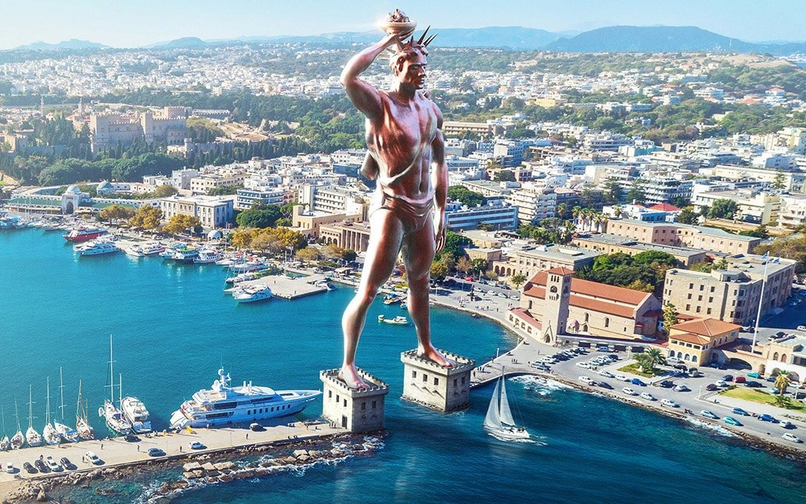

Колосс Родосский — гигантская статуя бога солнца Гелиоса, установленная на острове Родос в честь победы над войсками Деметрия I Полиоркета. Скульптором был Харет из Линда, ученик знаменитого Лисиппа.
Высота статуи составляла около 36 метров. Вопреки популярному мифу, Колосс не стоял, расставив ноги над входом в гавань — корабли проходили мимо него. Он располагался на массивном каменном постаменте у берега и служил маяком и символом свободы Родоса.
Колосс простоял всего 56 лет. Землетрясение 226 года до н.э. переломило его у коленей. Птолемей III предлагал средства на восстановление, но дельфийский оракул запретил это делать, посчитав разрушение знаком воли богов.
Обломки пролежали на земле почти 900 лет, привлекая путешественников. В 654 году нашей эры арабы продали остатки статуи на металлолом: по преданию, для вывоза потребовалось 900 верблюдов. До наших дней не сохранилось ни одного фрагмента.